← Back to P6 RFP overview
2.3 Drivetrain subsystem
Motor → V-belt → reducer → gear train → cam bearings → interface with transmission yoke. Mounts on drivetrain mount plate (frame).
Reminders: Provide Sumitomo Cyclo 6000 reducer specs. Provide more specs for WEG 22 1450 rpm motor. Additional drivetrain details to be added later.
Components (CAD colour key)
See Figure 1, Figure 7, Figure 10 for yoke/cam interface and gear assembly.
| Colour (hex) | Component |
|---|
| #FFE696 | Driven gear |
| #237A3A | Passive gear |
| #4AB6F6 | Two cam bearings — interface with yoke of transmission subsystem |
| #3683E6 | Passive gear shaft |
| #7D26B5 | Locating roller bearing SKF_F4BRP 208-SRB-CRH_ECY 213 (passive gear sits on) |
| — | Non-locating roller bearing SKF_F4BRP 208-SRB-CLE (driven gear sits on) |
| #366D20 | Reducer spacer |
| #5EB45D | Sumitomo Cyclo 6000 reducer |
| #572D9A | V-belt — DIN 2215 17×957, 2-belt, 1000 mm long |
| #6A37BB | WEG 22 1450 rpm motor |
| #D2B545 | Stainless steel motor mount plate spacer |
| #207E96 | Wooden motor mount plate |
Gallery
Drivetrain and cam/yoke interface. Refer to figures in the text as Figure 1, Figure 2, etc.
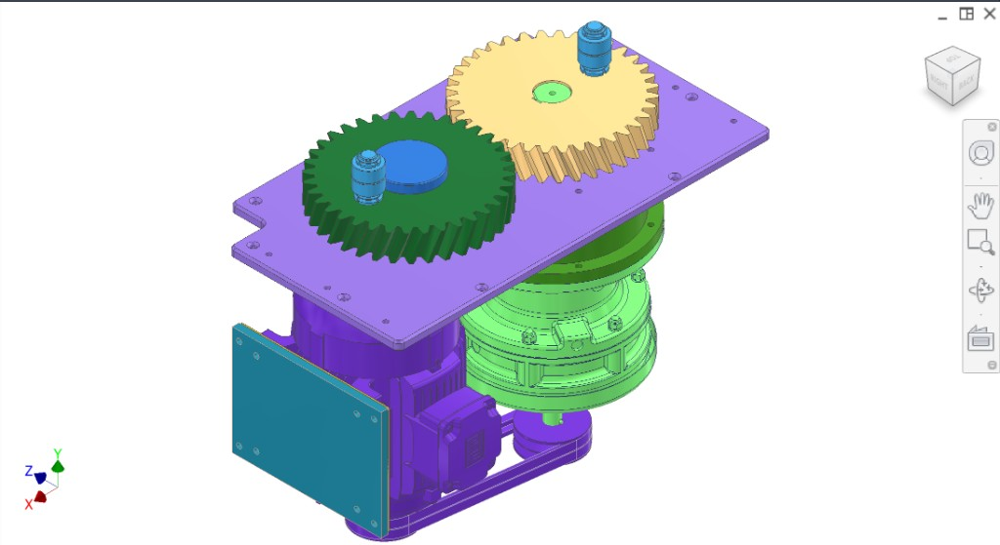
Figure 1. Isometric — gears, bearings, reducer, motor, V-belt.
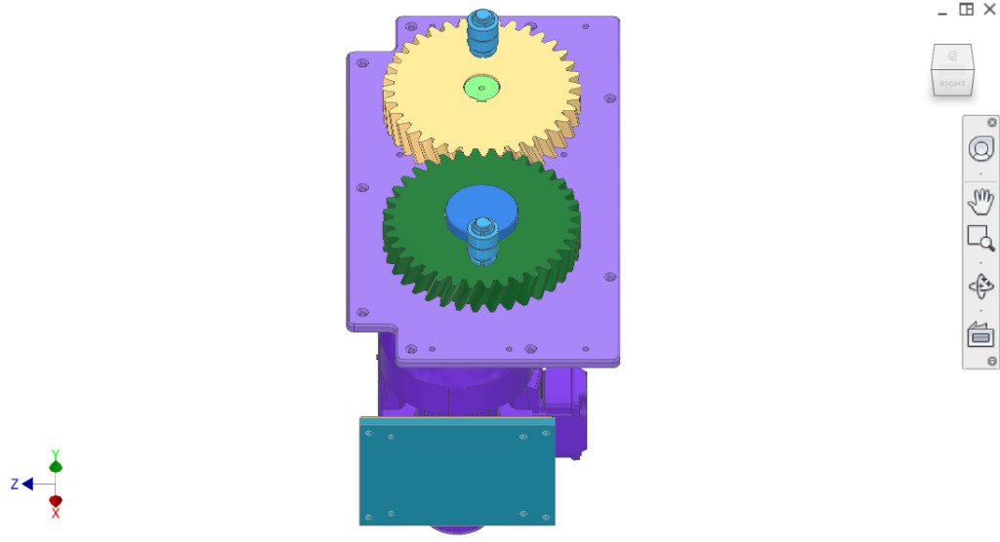
Figure 2. Top-down — two gears, reducer spacer, mounting.
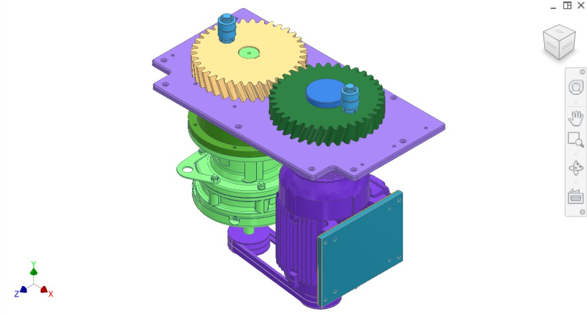
Figure 3. Elevated front-right — gear stack, reducer, motor, V-belt.
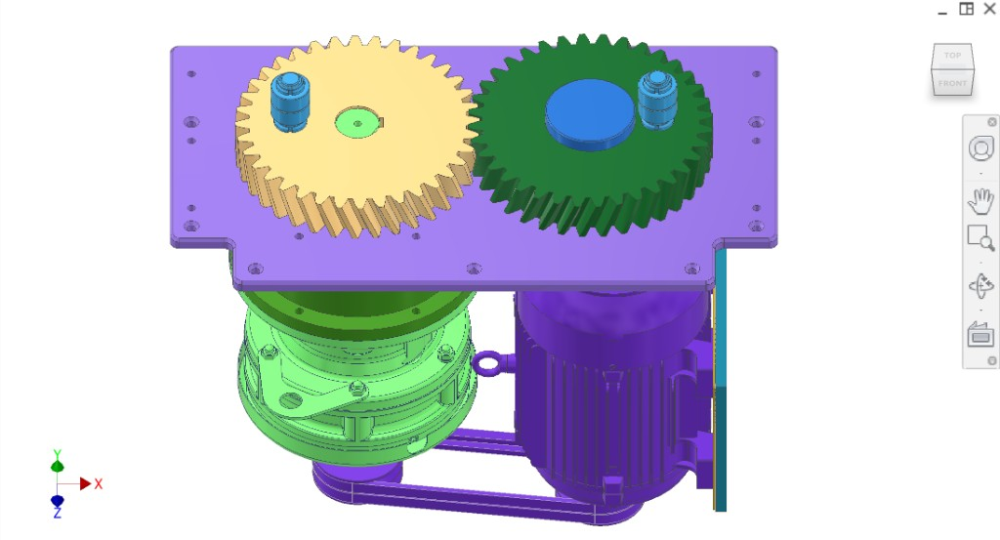
Figure 4. Front-right — mounting plate, gears, cam bearings, reducer, motor, spacers.
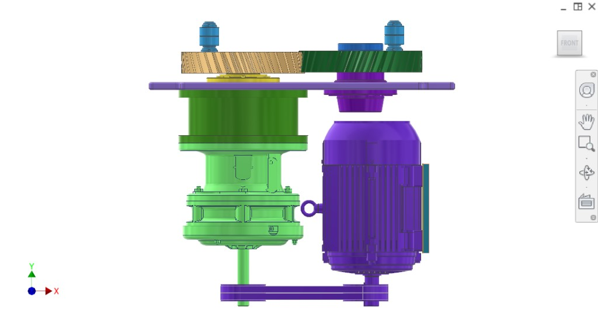
Figure 5. Front — motor, V-belt, reducer, gears, cam bearings.
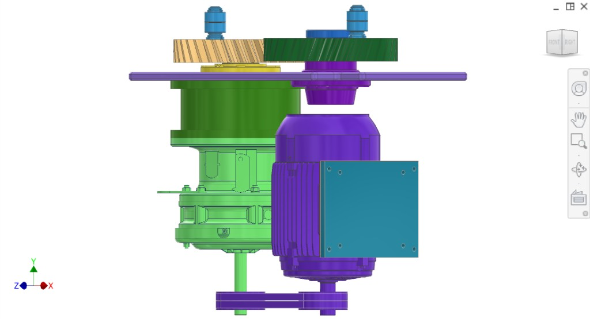
Figure 6. Right side — passive gear shaft, cam bearing, gears, motor, reducer.
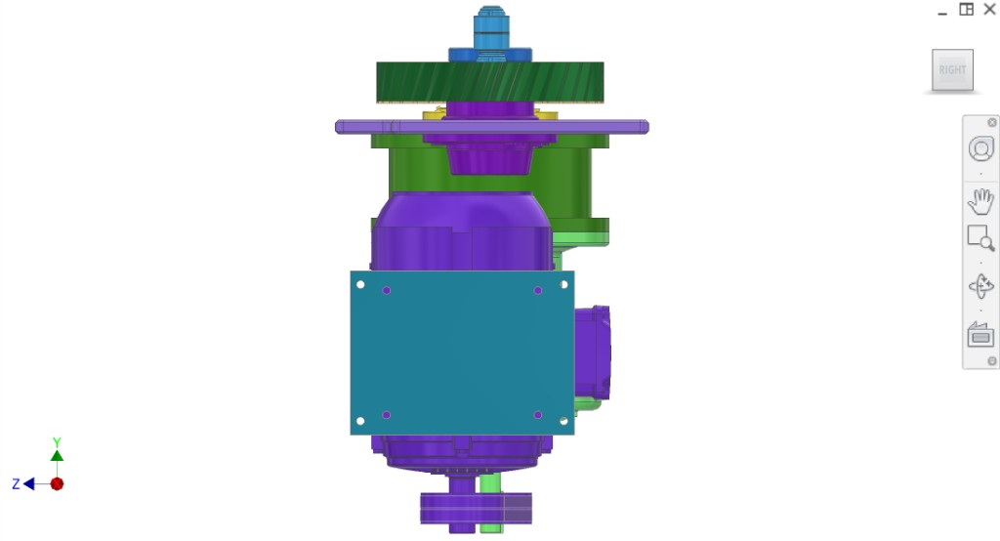
Figure 7. Cam bearings interfacing with transmission subsystem yoke.
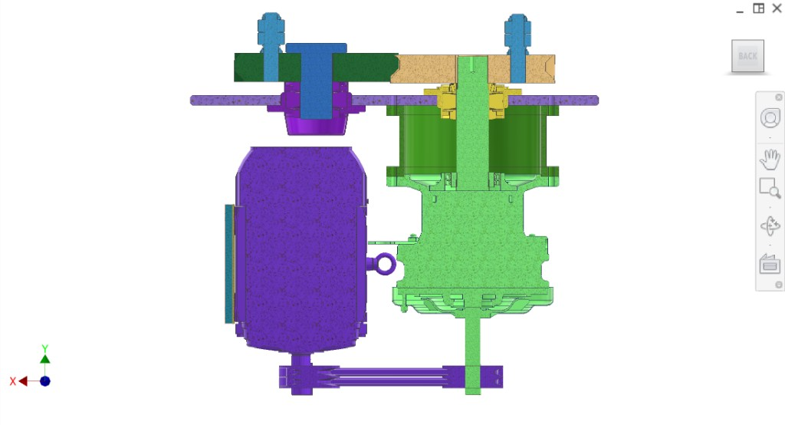
Figure 8. Front/side — gears, bearings, reducer, motor.
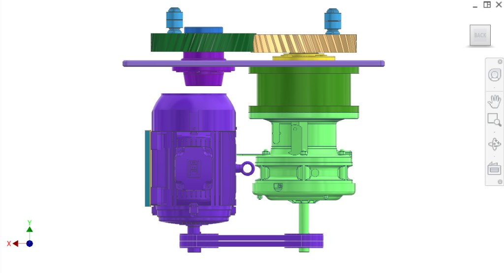
Figure 9. Cross-section — yoke, cam bearings, mount plates, gears, reducer, motor, V-belt.
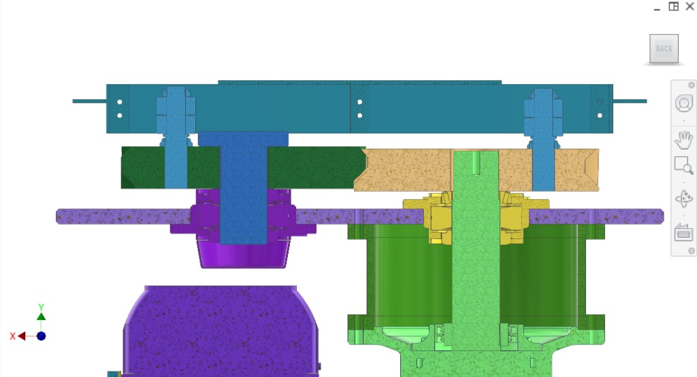
Figure 10. Top — two gears meshing, yoke (#2F9EBA), cam bearings in yoke.
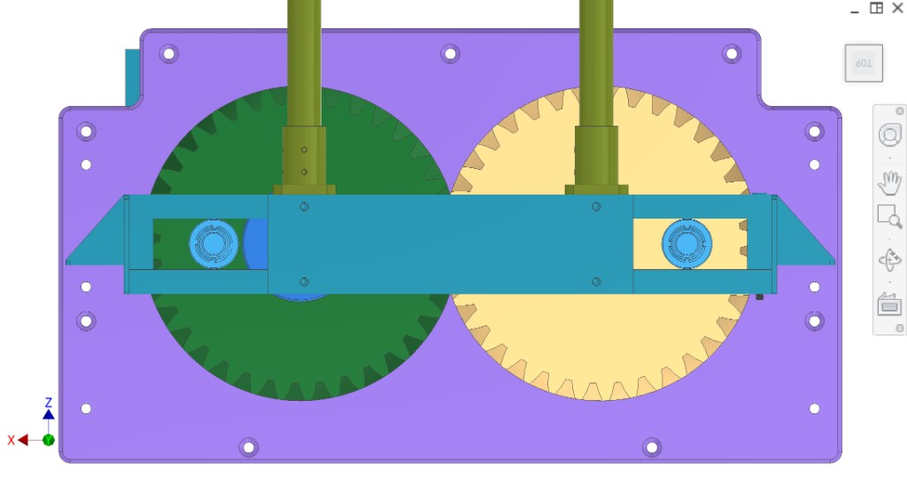
Figure 11. Back — motor, reducer, V-belt, mounting.
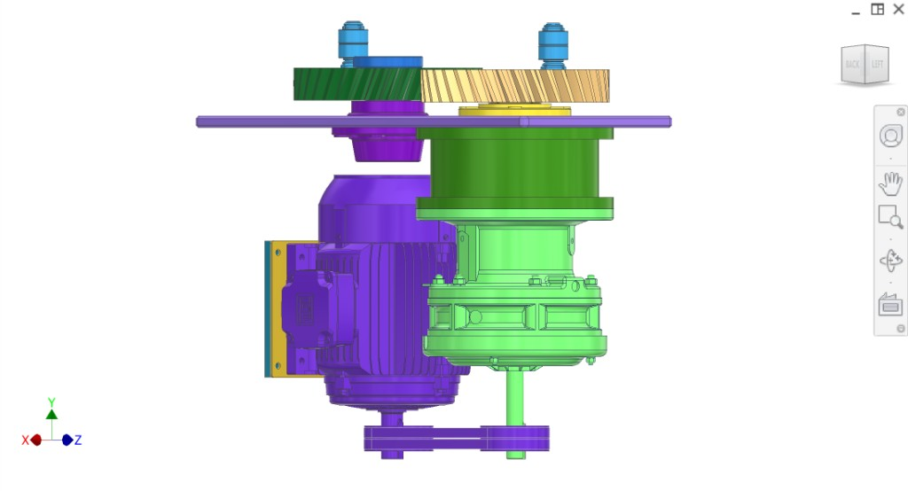
Figure 12. Front — full assembly.
Interfaces
- Input: WEG 22 1450 rpm motor → V-belt → Sumitomo Cyclo 6000 reducer.
- Output: Two cam bearings (#4AB6F6) interface with yoke of transmission subsystem.
- Mount: Drivetrain mount plate on main frame.
Drivetrain.md (source)